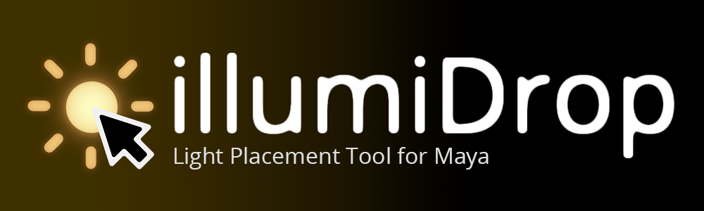
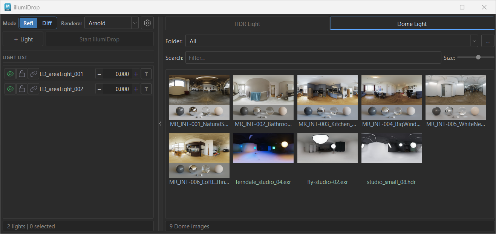
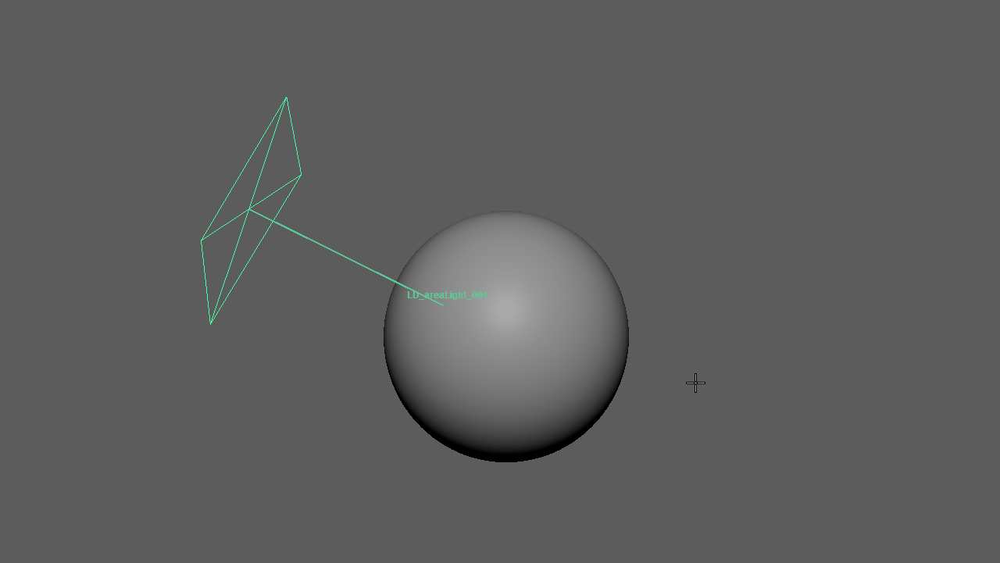
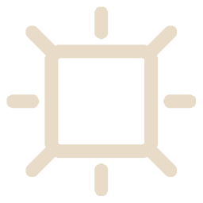
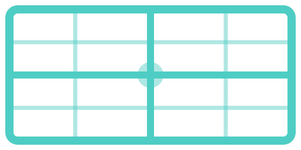

Interactive light placement tool for Autodesk Maya. Place, manage, and fine-tune renderer lights directly from a compact panel — with HDR support, ramp falloff, viewport guides, and background preview generation.
01 Overview
illumiDrop is an interactive light placement tool for Maya. It allows artists to create, place, adjust, and manage renderer lights directly from a compact floating panel — without needing to manually edit transforms or navigate Maya's Attribute Editor for common tasks.
- Interactive Placement — Click or drag on any mesh surface to place and reposition lights. Reflection and Diffuse modes give you precise control over how the light is aimed.
- Viewport Guides — After placement, illumiDrop draws guide lines from each light to its anchor point, color-coded by placement mode.
- Light Management — A live light list tracks every managed light with per-row exposure, visibility, lock, ramp/texture, and light linking controls.
- HDR Browser — Browse and assign .hdr, .hdri, and .exr images to area lights or dome lights, with optional sidecar JPEG preview generation.
Supported Renderers
illumiDrop v1.0 supports the following renderer plugins for Maya:
| Renderer | Light Types Created |
|---|---|
| Arnold (MtoA) | aiAreaLight, aiSkyDomeLight |
| Redshift | RedshiftPhysicalLight, RedshiftDomeLight |
| V-Ray | VRayLightRectShape, VRayLightDomeShape |
Supported HDR Formats
The HDR browser and preview generator support .hdr, .hdri, and .exr files. Other image formats are not supported for preview generation.
02 Installation
Requirements
| Requirement | Notes |
|---|---|
| Autodesk Maya | 2024 or later |
| Python | Bundled with Maya — no separate install needed |
| PySide6 / PySide2 | Bundled with Maya |
| Renderer plugin | Arnold (MtoA), Redshift, or V-Ray must be installed |
| NumPy | Required for Maya 2024. Included with Maya 2025–2026. Maya 2024 users must install NumPy into Maya 2024's Python site-packages before launching illumiDrop. |
| OpenEXR / Pillow | Only needed for generating EXR previews. illumiDrop can install these into its local illumiDrop/lib folder when prompted. |
Installing illumiDrop
-
1
Download and extract the illumiDrop package. Place the
illumiDropfolder inside your Maya scripts directory. Replace<USER>with your operating system user name.Windows:C:/Users/<USER>/Documents/maya/scripts/macOS:/Users/<USER>/Library/Preferences/Autodesk/maya/scripts/ -
2
Add a shelf button automatically — open the installed
illumiDropfolder, then dragillumiDrop_installer.pydirectly into a Maya viewport. -
3
illumiDrop will add a shelf button to the currently active Maya shelf. Existing shelf buttons are not removed or modified.
-
4
Alternatively, open illumiDrop manually or create a hotkey using the commands in Launching / Shelf / Hotkeys.
NumPy for Maya 2024
No module named numpy, install NumPy into Maya 2024's Python environment before opening the tool.
Windows: Open Command Prompt or PowerShell as Administrator, then run:
"C:/Program Files/Autodesk/Maya2024/bin/mayapy.exe" -m pip install numpy --target "C:/Program Files/Autodesk/Maya2024/Python/Lib/site-packages"macOS: Open Terminal, then run:
sudo /Applications/Autodesk/maya2024/Maya.app/Contents/bin/mayapy -m pip install numpyRestart Maya after installation.
OpenEXR / Pillow for EXR Previews
To generate previews for .exr files, illumiDrop requires OpenEXR, Imath, and Pillow. When you first generate an EXR preview, illumiDrop will detect the missing packages and show an install dialog.
The dialog offers two options:
03 Launching / Shelf / Hotkeys
Shelf Button
Click the illumiDrop shelf button to open the UI. Running the command again while the window is already open will bring it to the front.
Script Editor Command
To open illumiDrop manually from Maya's Script Editor, run:
import illumiDrop
illumiDrop.show()Hotkey Command
To toggle the placement tool on and off with a hotkey, use:
import illumiDrop
illumiDrop.toggle_tool()04 UI Overview

The illumiDrop window consists of two main areas: the Left Panel (controls and light list) and the optional Right Panel (HDR browser). The browser panel can be expanded or collapsed using the thin toggle bar between the two panels.
Left Panel
- Renderer Selector
- Dropdown to select Arnold, Redshift, or V-Ray. illumiDrop can detect the renderer from existing illumiDrop lights or Maya’s current render setting, and you can manually override it here.
- + Light Button
- Creates a new plain area light for the selected renderer. After creation, select the light in the list and press Start illumiDrop to begin placing it.
- Placement Mode — Reflection / Diffuse
- Segmented control that switches between Reflection and Diffuse placement modes. This persists between sessions.
- Start / Stop illumiDrop
- Activates or deactivates the interactive placement tool for the selected light. The button is disabled when no compatible light is selected. When a light is selected, the button becomes available as Start illumiDrop. While placement is active, the button turns green and reads Stop illumiDrop.
- Light List
- Scrollable list of all illumiDrop-managed lights in the scene. Each row has inline controls for visibility, lock, light linking, name, exposure, and texture/ramp state.
- Status Bar
- Shows contextual messages about operations, warnings, and tool state at the bottom of the left panel.
Right Panel (HDR Browser)
- HDR Lights tab
- Browse, select, and assign HDR images to area lights. Double-click to create a new HDR area light.
- Dome tab
- Browse, select, and assign HDR images to dome lights. Double-click to create a new dome light.
- Folder / Browse button
- Select the root folder containing your HDR images. Saved per tab between sessions.
- Subfolder filter (Folder dropdown)
- Filter thumbnails to show only images from a selected subfolder within the current root.
- Search field
- Filter thumbnails by filename. The search is case-insensitive.
- Thumbnail size slider
- Adjusts the display size of thumbnails from 80 px to 256 px. The value is saved between sessions.
05 Light List
Each row in the light list represents one illumiDrop-managed light. The controls are arranged left to right: visibility, lock, light linking, light name, exposure, and texture/ramp state.
Light Row Controls
T to create a ramp, click a ramp preview to open the ramp node, click an HDR preview to open the light, or right-click for the ramp/texture context menu.Texture / Ramp Square States
The small square at the right end of each light row shows the current texture or ramp state of the light.
| Display | Meaning |
|---|---|
| T | No texture or ramp assigned |
| Gradient preview | Ramp falloff is connected to this light |
| HDR thumbnail | An HDR texture is connected |
| Default HDR icon | Texture assigned but no sidecar preview image found |
06 HDR Browser
The HDR Browser is the right-hand panel of illumiDrop. It scans a selected folder and displays thumbnails of all found HDR/EXR images. It has two tabs: HDR Lights (for area lights) and Dome (for dome lights).
Browser Click Behavior
| Action | Result |
|---|---|
| Single click (LMB) | Select the thumbnail only — no light creation or assignment |
| Middle click (MMB) | Assign the image to the currently selected compatible light |
| Double click (LMB) | Create a new light using this image (see below) |
| Right-click | Open the thumbnail context menu |
| Hover | Show a larger preview popup of the image |
Middle-Click Assignment Rules
Middle-click is a safe assignment action. It will not silently replace an active ramp. The following rules apply:
- In the HDR Lights tab: assigns the image to the selected area/HDR area light.
- In the Dome tab: assigns the image to the selected dome light.
- If no compatible light is selected, assignment will not happen.
- If the selected light has an active ramp, assignment will be blocked. Remove the ramp first, or use the Assign to Selected Light(s) context menu option for an explicit replacement.
Double-Click Light Creation
- HDR Lights tab double-click → Creates a new HDR area light using the clicked image.
- Dome tab double-click → Creates a new dome light using the clicked image.
Subfolder Color Coding
When the root folder contains subfolders, thumbnails are labeled with different muted colors per folder to help visually distinguish groups of images at a glance.
07 Creating Lights
+ Light Button (Plain Area Light)
The + Light button creates a new plain area light for the selected renderer. After creation, the new light is automatically selected in the list. Press Start illumiDrop to begin placing it in the viewport.
From the HDR Browser — HDR Area Light
Double-click any thumbnail in the HDR Lights tab to create a new HDR area light with that image already connected as its texture. The new light is immediately selected and ready to place.
From the HDR Browser — Dome Light
Double-click any thumbnail in the Dome tab to create a new dome light with that image connected. Dome lights are placed at the scene origin and cannot be placed on mesh surfaces.
From the Thumbnail Context Menu
Right-clicking any thumbnail provides dedicated Create New HDR Light and Create New Dome Light options regardless of which tab is active.
08 Placement & Mouse Controls
To place a light, select it in the light list and press Start illumiDrop. The tool intercepts viewport mouse events until you press Stop illumiDrop or click the button again.
Placement Modes
Reflection Mode
The light is placed along the reflected view direction from the clicked surface point. Use this to position highlights and specular reflections. The viewport guide line is drawn in muted blue-cyan.
Diffuse Mode
The light is placed along the surface normal of the clicked point. Use this for direct, diffuse-facing illumination. The viewport guide line is drawn in muted amber.
Mouse Control Reference
The demo below shows the main placement controls: placing a light, adjusting distance, scaling, spinning, and orbiting around the saved anchor point.

| Control | Result |
|---|---|
| LMB click / drag on mesh | Place the selected light at the clicked point |
| Shift + LMB drag | Adjust distance from the saved anchor point |
| Shift + MMB drag | Orbit the light horizontally around the saved anchor point using the world Y/up axis |
| Ctrl + LMB drag | Scale the area / HDR light |
| Ctrl + MMB drag | Spin (roll) the area / HDR light |
Scale (Ctrl+LMB drag) does not apply to dome lights.
Placement Sensitivity
The speed of placement and orbit gestures can be adjusted in Settings → Placement Sensitivity (range: 0.25× to 2.00×).
09 Dome Lights
Dome lights behave differently from area lights in illumiDrop. They are environment rotation-only lights — they cannot be placed on mesh surfaces and always remain at the scene origin.
Dome Rotation
When a dome light is selected and illumiDrop is active, dragging LMB in the viewport rotates the dome environment horizontally. The in-view message reads "LMB Drag rotate dome" to indicate this mode.
| Control | Result |
|---|---|
| LMB drag (dome active) | Rotate dome environment horizontally |
Resetting Dome Rotation
Right-click a dome light row in the list and choose Reset Rotation to return the dome to its default orientation.
10 Exposure Control
Exposure is controlled per-light from the light row in the panel. All exposure changes on selected lights are undoable.
When multiple lights are selected, adjusting the exposure of the primary light's row applies the change to all selected compatible lights simultaneously.
11 Ramp & Texture
Applying a Ramp
If a light has no active texture or ramp, click the T square in the light row to create and connect a ramp falloff node to that light. A gradient preview will appear in the square.
To apply a ramp to multiple selected lights, right-click any T square and choose Apply Ramp to Selected Lights.
Removing a Ramp
Right-click the T / ramp preview square and choose one of:
- Delete Ramp Node — removes the ramp from the current light.
- Remove Ramp Node(s) from Selected Lights — removes ramps from all selected lights.
Removing an HDR Texture
Right-click the HDR preview square and choose Remove Texture Node (or Remove Texture Node(s) from Selected Lights for a multi-light operation).
Ramp vs HDR Texture — Assignment Rules
Middle-clicking an HDR thumbnail to assign it is a safe action and will not replace an existing active ramp. If you want to replace a ramp with an HDR texture, do one of the following:
- Remove the ramp first (right-click
T→ Delete Ramp Node), then assign the HDR texture. - Use the right-click thumbnail context menu → Assign to Selected Light(s), which is an explicit replacement action and will replace the ramp in one undo step.
Fitting HDR to Light Ratio
Right-click the HDR preview square and choose Fit Light to Image Ratio to resize the area light to match the aspect ratio of its assigned HDR texture.
12 Multi-Selection
illumiDrop supports selecting multiple lights at once for batch operations.
Selecting Multiple Lights
| Method | Behavior |
|---|---|
| Click a row | Select that light only |
| Shift + click | Select a contiguous range of rows |
| Ctrl + click | Toggle individual rows in/out of selection |
| Maya Outliner | Light list and Maya selection sync in both directions |
Active Placement Target
When multiple lights are selected, the last selected light is treated as the primary/active placement target. This means illumiDrop will place and adjust that light when the tool is active. Multi-selection is still used for all batch operations listed below.
Batch Operations
The following operations apply to all selected lights:
- Delete selected lights
- Duplicate selected lights (as a single undo step)
- Toggle visibility
- Toggle lock
- Assign HDR texture to selected compatible lights
- Apply ramp to selected compatible lights
- Remove ramp nodes from selected lights
- Remove texture nodes from selected lights
- Fit HDR area lights to image ratio
- Solo / Unsolo selected lights
13 Solo / Unsolo
Solo temporarily hides all other illumiDrop-managed lights, leaving only the soloed light (or lights) visible. This is useful for evaluating a single light's contribution without deleting or permanently hiding others.
How it Works
-
1
Before soloing, illumiDrop records the current visibility state of all managed lights.
-
2
Solo is applied — only the selected light(s) remain visible.
-
3
When Unsolo is chosen, illumiDrop restores the previously recorded visibility state, not a simple "make everything visible" reset.
- A light that was hidden before solo will return to hidden after unsolo.
- A light that was visible before solo will return to visible after unsolo.
- If lights are deleted while solo is active, those entries are pruned from the saved state so unsolo restores correctly.
Access Solo and Unsolo from the light row right-click context menu.
14 Viewport Guides
After placing an area or HDR area light, illumiDrop draws a viewport guide that visualizes the relationship between the light and the surface point it was placed from (the anchor).
Guide Elements
- Guide line — a line from the light to the anchor point on the surface.
- Anchor point indicator — marks the surface contact point.
- Light name annotation — the light's name displayed near the guide.
Color Coding
| Color | Meaning |
|---|---|
| Muted blue-cyan | Light placed in Reflection mode |
| Muted amber | Light placed in Diffuse mode |
| Bright green | Currently selected guide / light |
15 HDR Browser — Detailed Interactions
Hover Preview
Hovering over a thumbnail shows a larger preview popup near the cursor after a short delay. The popup size and delay are configurable in Settings.
Multiple Thumbnail Selection
The HDR browser supports multi-selection of thumbnails using Shift+click (range) and Ctrl+click (toggle). Batch operations like Generate Preview for Selected and Regenerate Preview for Selected apply to all selected thumbnails.
Thumbnail Context Menu
| Action | Description |
|---|---|
| Assign to Selected Light(s) | Assigns the HDR image to the selected compatible area lights. This is an explicit replacement action — it replaces an existing ramp if one is present. |
| Assign to Selected Dome | Assigns the image to the selected dome light. |
| Generate Preview | Generates a sidecar .jpg preview for this image (if one does not exist). |
| Regenerate Preview | Rebuilds the existing sidecar .jpg preview, even if one already exists. |
| Generate / Regenerate Preview for Selected | Batch preview generation for all selected thumbnails. |
| Create New HDR Light | Creates a new area HDR light with this image, regardless of current tab. |
| Create New Dome Light | Creates a new dome light with this image, regardless of current tab. |
| Open Image Folder | Opens the folder containing this image in your OS file browser. |
16 Preview Generation
illumiDrop displays existing sidecar JPEG previews when they are available alongside the source .hdr, .hdri, or .exr file. To create or refresh previews, right-click a thumbnail and choose Generate Preview or Regenerate Preview.
Missing Preview Thumbnails
If no sidecar JPEG preview is found, illumiDrop shows a default thumbnail so the file can still be selected, assigned, or used to create a light. Generate a preview from the thumbnail context menu when you want an image preview.


Where Previews Are Saved
Sidecar previews are saved as .jpg files in the same folder as the source HDR/EXR file. Write permission to that folder is required.
Preview Job Behavior
Large preview batches may take longer. You can continue working while previews are being generated, but closing illumiDrop will stop the preview job.
18 Settings
Open Settings from the ⚙ gear button at the top of the left panel. Preferences are saved in your Maya user preferences and persist across Maya sessions.
Placement
| Setting | Description |
|---|---|
| Default Distance | The default distance used when placing a light for the first time. |
| Placement Sensitivity | Controls the speed of placement, distance, and orbit gestures. Range: −2 (slowest, 0.25×) to +2 (fastest, 2.00×). |
| Exposure Drag Sensitivity | Controls the speed of Ctrl+drag exposure adjustments. Range: −2 (finest) to +2 (coarsest). |
Display
| Setting | Description |
|---|---|
| In-View Message | Show or hide Maya's in-view messages during placement (On / Off). |
| Hover Preview | Size of the hover preview popup in the HDR browser (Off / Small / Medium / Large). |
| Light List Preview | Size of the preview popup when hovering over the texture square in the light list (Off / Small / Medium / Large). |
| Preview Delay | How quickly hover previews appear (Fast / Normal / Slow). |
UI Scale
Scale the entire illumiDrop UI to better fit your screen or display DPI. Options: 100%, 125%, 150%, 200%. Changing this setting restarts the panel automatically.
19 Troubleshooting & Support
If something does not work as expected, check the items below first.
| Issue | What to Check |
|---|---|
| illumiDrop does not open | Make sure the illumiDrop folder is placed inside a Maya scripts folder, then try running import illumiDrop; illumiDrop.show() from Maya's Script Editor. |
| Shelf button does not appear | Make sure the illumiDrop folder is installed in a Maya scripts directory, then drag illumiDrop_installer.py from inside that folder into a Maya viewport, not into the Script Editor. The shelf button is added to the currently active shelf. |
| Cannot create renderer light | Make sure the selected renderer plugin is installed and loaded in Maya. illumiDrop supports Arnold, Redshift, and V-Ray. |
| Cannot place or adjust a light | Make sure an illumiDrop-managed light is selected, the light is visible and unlocked, and you are clicking on a visible polygon mesh surface. |
| HDR texture does not assign | If the selected light has an active ramp, remove the ramp first or use the thumbnail context menu → Assign to Selected Light(s) for explicit replacement. |
| illumiDrop does not open in Maya 2024 | If Maya reports No module named numpy, install NumPy into Maya 2024's Python site-packages using the command in the Installation section, then restart Maya. |
| Preview generation fails | Make sure the HDR/EXR folder is writable. For EXR files, install OpenEXR and Pillow when prompted. |
| Guide remains after deleting a light outside illumiDrop | Open or refresh illumiDrop. Orphan guides are cleaned automatically during scene sync. |